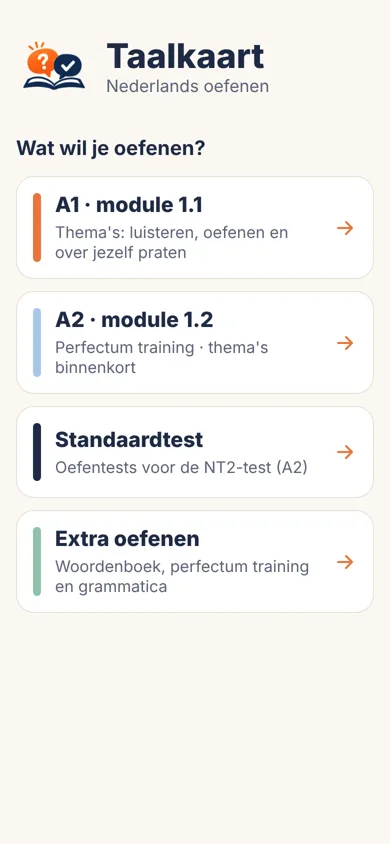
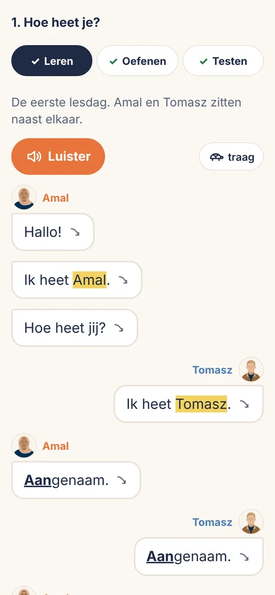

Voor NT2 · richtgraad 1 en de standaardtest
Nederlands oefenen op je gsm en tablet.
Een oefenapp voor cursisten Nederlands tweede taal in Vlaanderen en Brussel. Heel richtgraad 1, A1 en A2, oefen je met de app. Gemaakt door NT2-leerkrachten, als aanvulling op de les.
Taalkaart is in testfase, voor iPhone, iPad, Android-gsm en Android-tablet. Nu alleen voor de testers.

